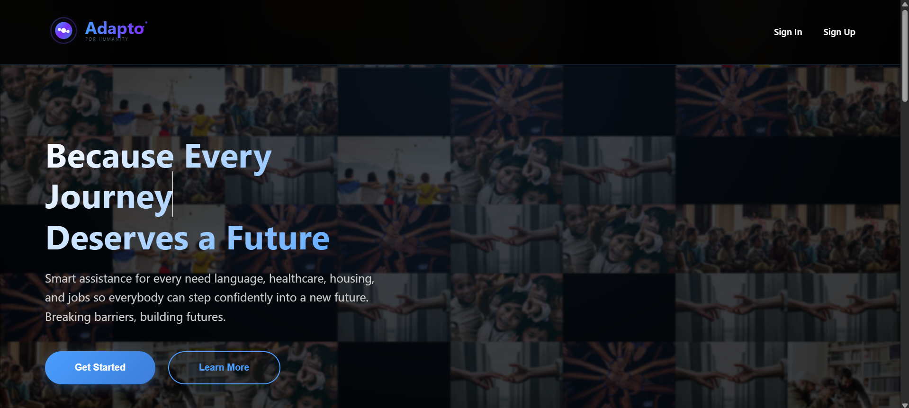
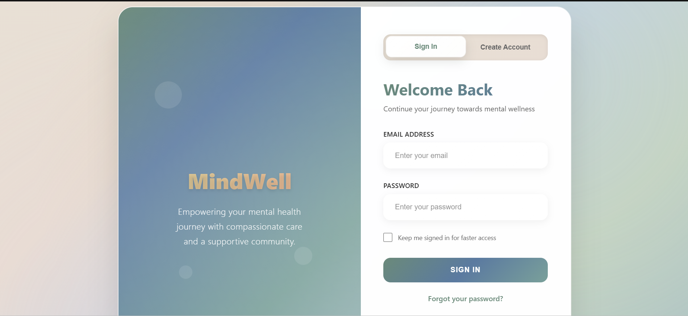
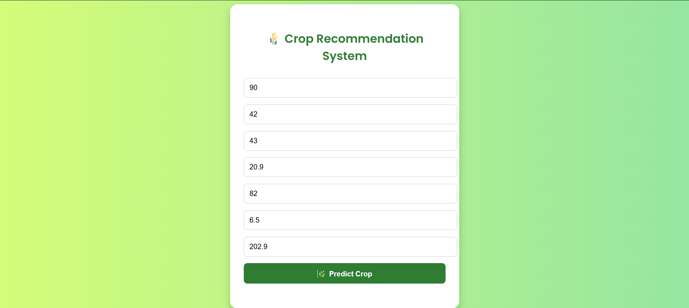
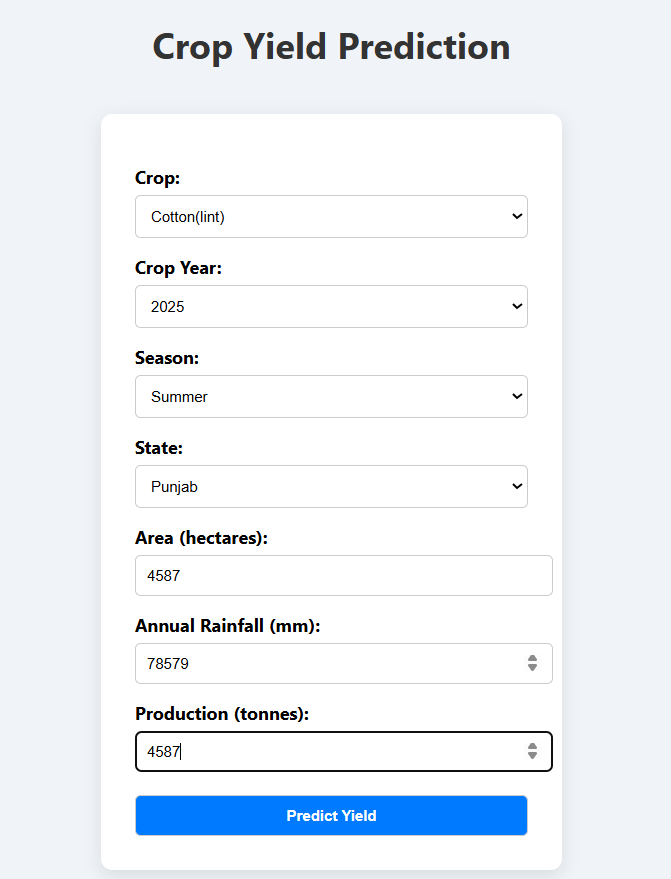

Adapto — For Humanity
Developed a platform designed to help individuals navigate emergencies, migration, disasters, and unfamiliar environments through intelligent, accessible tools.
Hello! I'm Kanisha Sharma, a passionate developer and lifelong learner with a strong interest in Artificial Intelligence and Machine Learning. I enjoy exploring new technologies, solving real-world problems through code, and continuously improving my skills.
Internships
Projects Built
Hackathon Awards
AI & ML undergraduate at VIT Bhopal with strong Python and machine learning fundamentals. Improved open-source project efficiency by 20% through code reviews and contributions during GSSOC. Developed and tested Python solutions in a hands-on internship, applying supervised and unsupervised learning, feature engineering, and deep learning frameworks. Seeking to deliver production-grade code to optimize model performance and reliability as an ML engineering intern.

Developed a platform designed to help individuals navigate emergencies, migration, disasters, and unfamiliar environments through intelligent, accessible tools.

Developed an intelligent sustainability platform that recommends the greenest cloud regions for your deployments powered by real-time carbon intensity data.

Developed and deployed an AI-driven youth mental wellness platform using various APIs; with modules for journaling, mood tracking, community support, and a single-player game, aimed at promoting emotional well-being.

Developed a high-accuracy ML-based Crop Recommendation System using environmental and soil parameters, achieving 99.31% accuracy with Random Forest Classifier.

Developed a high-accuracy ML-based Crop Yield Prediction Model using historical agricultural and environmental data, achieving 93.50% R² score with XGBoost Regressor.
Data Engineering Intern
Feb 2026 – Present
Developed and optimized Python-based ETL pipelines on GCP to process and prepare structured data for analytics and ML workflows while improving pipeline efficiency through global team collaboration.
Project Admin and Contributor
June 2025 – Nov 2025
Serving as a Project Admin and Contributor at GirlScript Summer of Code (GSSoC), leading project development and collaborating on open-source initiatives.
Artificial Intelligence and Data Analytics Intern
June 2025 – July 2025
Completed an Artificial Intelligence and Data Analytics internship focused on Green Skills at Edunet Foundation, organized by AICTE.
Machine Learning & AI Intern
June 2025 – July 2025
Completed a Machine Learning & AI internship at Tamizhan Skills, gained practical training and skill development through the RISE Internship Program.
Python Programming Intern
June 2025 – June 2025
Successfully completed a structured 1-month internship program focused on enhancing practical skills in Python programming through hands-on projects.
INNOVATEX 2025 — Hackathon & Ideathon
March 2025 – April 2025
Successfully led and organized a large-scale innovation event with over 200+ participants, managing end-to-end planning, promotions, logistics, and cross-team coordination.
Secured 2nd Runner-Up out of 500+ teams at HackLoop Hackathon 2025, demonstrating innovation, problem-solving, strong technical expertise and teamwork.
Selected as a finalist among numerous participants for developing an innovative AI/ML-based solution during the Neural Nexus Hackathon, showcasing strong problem-solving and teamwork under pressure.
Achieved finalist position by contributing to a high-impact tech project that demonstrated creativity, technical proficiency, and practical application of cloud-based solutions at the Vultr Hackathon.
Covered cloud service models, deployment strategies, and distributed infrastructure concepts.
NPTEL · May 2025Full-stack web development covering HTML, CSS, JavaScript, and modern frameworks.
Udemy · Jan 2025Hands-on certification in building fully responsive and accessible web interfaces.
freeCodeCamp · May 2024Practical Python programming for scientific and computational problem solving.
freeCodeCamp · Apr 2024I'm always open to interesting opportunities, collaborations, and conversations. Fill out the form and I'll get back to you.
GitHub
KanishaSharma11